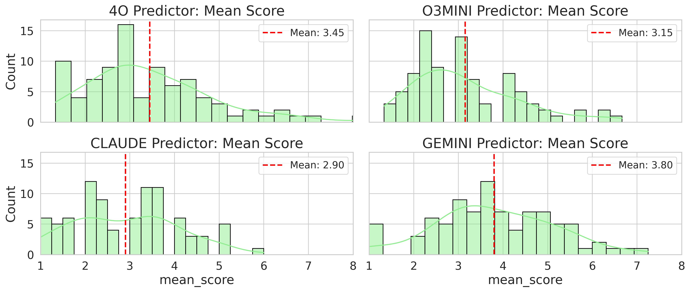

The figure below shows the aggregated score distributions
for each predictor LLM, illustrating overall performance trends. All models average between 3 and
3.5. Due to the knowledge cutoff, we refrain from
directly comparing the predictor LLMs. Nonetheless, the right-skewed distributions and low averages suggest that state-of-the-art LLMs struggle to
consistently produce high-quality methodologies
when prompted zero-shot. Although they capture
some fundamental steps, they lack the fine-grained,
domain-specific details needed for rigor. These
findings highlight the need for further innovation
to guide LLMs toward generating robust scientific
methodologies

It is important to note that because the dataset exclusively contains AI/ML papers with 15 pages or less,
it narrows the scope of our evaluation, making it unclear whether our
findings would generalize to other disciplines, such
as medicine or social sciences, where experimental
frameworks may differ significantly.
We imposed this page limit due to context window limits and to constrain the manual redaction
process. This may exclude more rigorous methodologies in longer research papers that are more challenging to predict. Additionally, papers with extensive mathematical notation were excluded due to
PyMuPDF parsing failures. This limits our benchmark’s applicability to theoretical or math-heavy
research and may inflate model performance. Finally, while all 88 papers were published after GPT4o’s October 2023 cutoff to minimize training data
overlap, we later included models with later cutoffs
(e.g., Claude 3.5 Sonnet, Gemini 1.5 Pro). This
introduces a risk of training data contamination in
those models